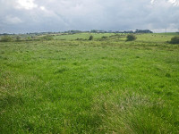
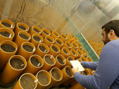
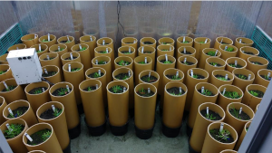
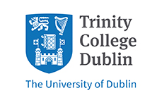
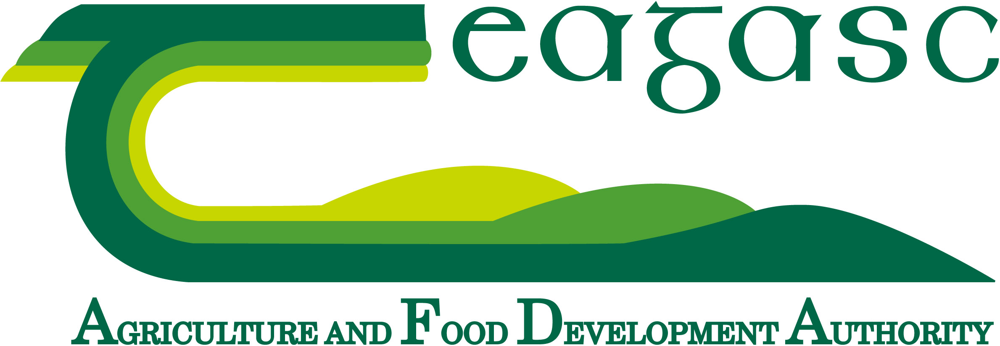
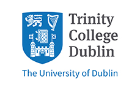
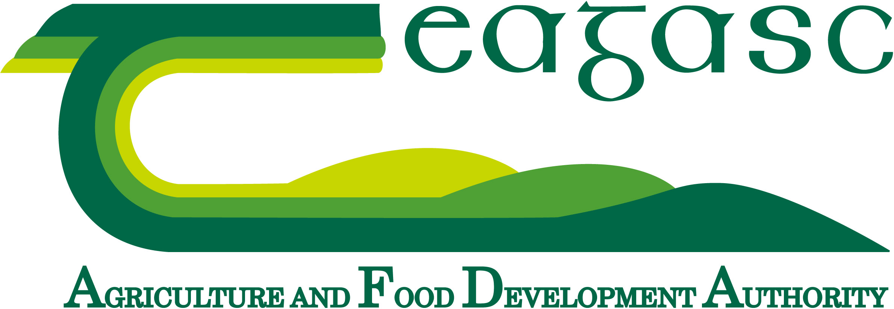

The phenology of perennial ryegrass and its potential contribution to grassland carbon sequestration
People: Carl Fisk, Rainer Melzer, Hannah White, Charilaos Yiotis, Jon Yearsley
 @IrishPhenology
@IrishPhenologyProject Description
 In the face of climate change and under growing pressure to reduce greenhouse gas emissions, phenology - the timing of developmental events in a plant life cycle - is strongly dependent on environmental and genetic conditions. Phenological events will change if temperatures increase, and this poses largely uncharacterized challenges and opportunities for Irish ecosystems.
 This project aims to evaluate the significance of variations in the phenology of perennial ryegrass. Perennial ryegrass is economically and ecologically the most important species of improved grasslands in Ireland. These grasslands are important carbon sinks and thus the phenological response to climate can be an important factor underpinning any reductions in greenhouse gas emissions
 We will combine remote sensing, the analysis of historical data, and experimental measurements under current and future climatic conditions to obtain a holistic view of the phenology of perennial ryegrass. Using this data, modelling will be employed to determine the phenological response of different perennial ryegrass varieties to changing climatic conditions.
We will use this information to identify perennial ryegrass varieties that are best suited as carbon sinks in a changing environment.

 


